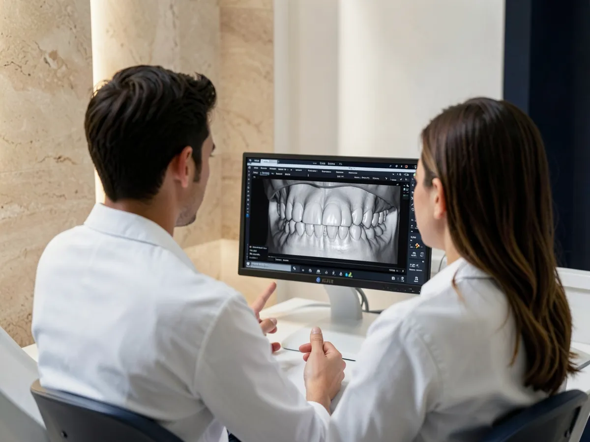
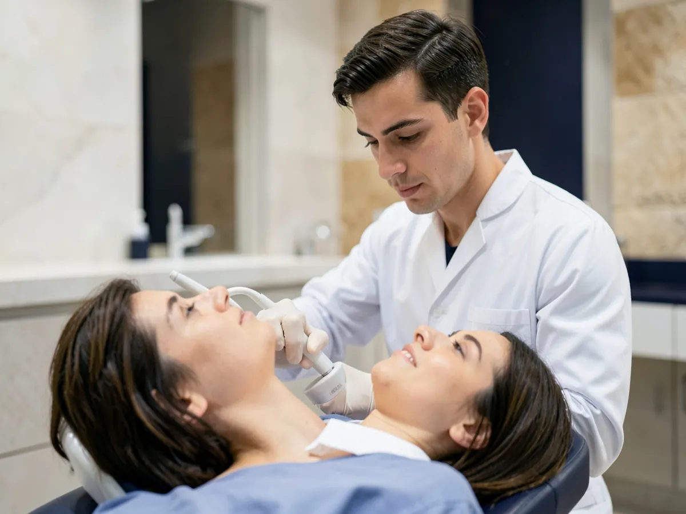
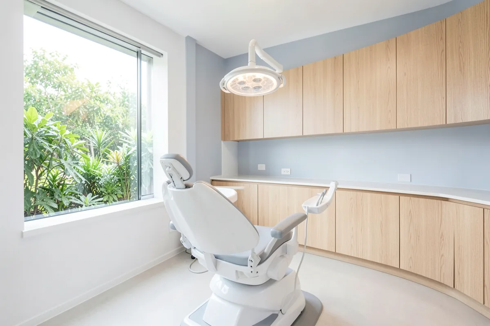
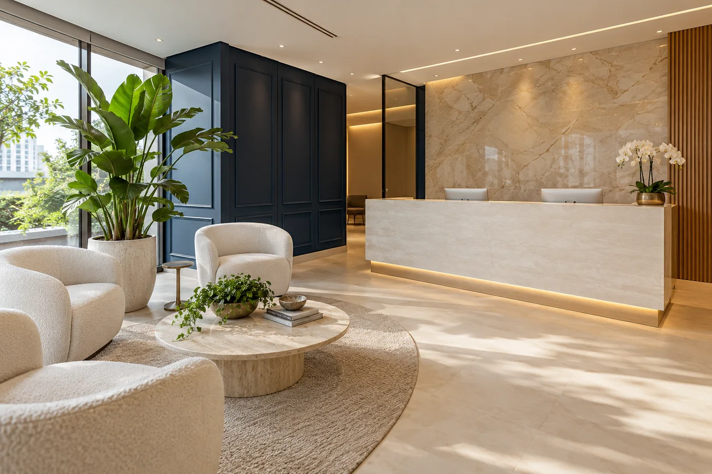

Implantes dentários
Reposição de um ou mais dentes com implantes, planejada a partir de exames de imagem para devolver função e estética com segurança.
Agendar avaliação para implanteImplantes, lentes de contato dental e estética do sorriso com planejamento digital: você entende o tratamento antes de começar.
Cada caso começa por uma avaliação completa. A indicação do tratamento é sempre individual.
Reposição de um ou mais dentes com implantes, planejada a partir de exames de imagem para devolver função e estética com segurança.
Agendar avaliação para implanteLâminas finas de porcelana ou resina para corrigir forma, cor e pequenos espaços, com prévia do resultado antes da execução.
Agendar avaliação para lentesAparelhos fixos ou alinhadores transparentes, com acompanhamento a cada etapa do movimento dos dentes.
Agendar avaliação ortodônticaClareamento de consultório ou supervisionado em casa, depois de avaliar a saúde dos dentes e da gengiva.
Agendar avaliação para clareamentoTratamentos combinados para quem precisa recuperar vários dentes, a mordida e a confiança para sorrir.
Agendar avaliação completaEscaneamento, imagens e projeto do sorriso no computador. Você vê o plano, pergunta e decide com segurança.


Moldagem digital, sem massa, mais rápida e confortável.
Forma, tamanho e proporção dos dentes desenhados para o seu rosto.
Cada etapa planejada antes de começar, com prazos claros.
Conversa sobre o que você deseja, exame clínico e pedido dos exames necessários.
Escaneamento e projeto do tratamento, apresentados com calma.
Sessões marcadas com antecedência, seguindo o plano aprovado.
Revisões periódicas para cuidar do resultado ao longo do tempo.
Ambiente reservado, pontualidade e biossegurança em cada atendimento.


Não encontrou a sua? Pergunte pelo WhatsApp.
Informamos pelo WhatsApp como funciona a avaliação e o que está incluído nela.
Depende do caso. Em muitos casos o desgaste é mínimo ou nenhum. Isso é avaliado e explicado no planejamento.
O tempo varia conforme o osso e a saúde de cada paciente. O cronograma é apresentado no planejamento, antes de começar.
As formas de pagamento são apresentadas junto com o plano de tratamento.
Pelo WhatsApp (21) 98060-2549.
Conte o que você quer mudar no seu sorriso e receba os horários disponíveis.